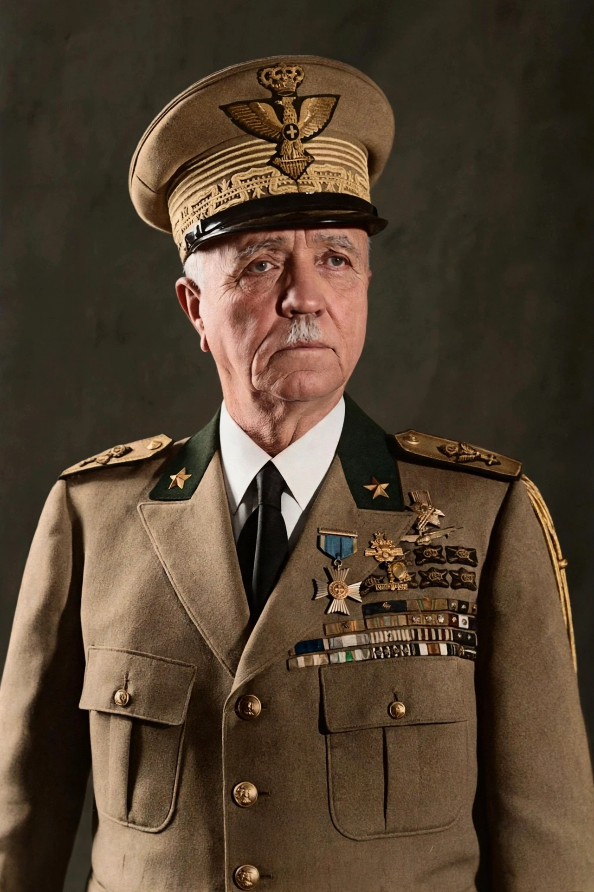

Pietro Badoglio, 1st Duke of Addis Abeba (1871–1956), was an Italian general and statesman. A Marshal of Italy, he commanded Italian forces in the Second Italo-Ethiopian War, and became Prime Minister of Italy in July 1943 after the fall of Benito Mussolini, negotiating Italy's armistice with the Allies.

Badoglio served in the Italo-Turkish War and the First World War; his sector's collapse at Caporetto in 1917 remained controversial, but he became army chief of staff under King Victor Emmanuel III. He governed Libya and, in 1935–36, replaced De Bono in Ethiopia, where his forces used poison gas; he became Viceroy of Italian East Africa and Duke of Addis Ababa.
After the Grand Council deposed Mussolini on 25 July 1943, the King appointed Badoglio prime minister. He signed the Armistice of Cassibile (announced 8 September 1943), after which Germany occupied northern Italy and his government fled to Brindisi. He resigned in June 1944.